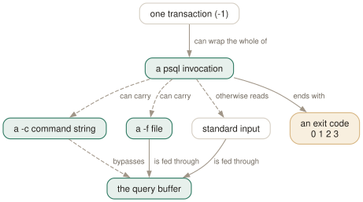

Day 11
psql in scripts
The exit code is all the caller sees, and by default a failing script does not change it.
By the end of today you can
- make a failing SQL script actually fail, with a distinguishable exit code
- choose between -c, -f and standard input from what each one does to the query buffer
- include one script from another without depending on the caller's working directory
By default, a failing script succeeds
This is the most consequential default in psql, and almost nobody meets it deliberately. Run a file containing an error and psql prints the error, carries on with the rest of the file, and exits 0. Your CI goes green over a half-applied migration.
$ cat it.sql
SELECT 1;
SELECT nosuch;
SELECT 2;
$ psql -X -f it.sql > /dev/null; echo $?
psql:it.sql:2: ERROR: column "nosuch" does not exist
0
$ psql -X -v ON_ERROR_STOP=1 -f it.sql > /dev/null; echo $?
psql:it.sql:2: ERROR: column "nosuch" does not exist
3
And 3 is a specific number rather than a generic failure, which makes the four codes worth memorising:
0- psql finished normally
1- a fatal error of psql's own: bad flag, file not found, out of memory
2- the connection went bad and the session was not interactive
3- an error occurred in a script and
ON_ERROR_STOPwas set
A wrapper can therefore retry on 2 and give up on 3, which is exactly the distinction a deployment script needs and almost never makes.

-c bypassing the query buffer: that is why you cannot mix SQL and meta-commands in one -c, and why a multi-statement -c string is a single request and so a single transaction. The amber box is the only thing the caller ever sees — 0, 1, 2 or 3 — and by default an error in your SQL does not change it.Three ways in, and one of them has no buffer
-c and -f may both be repeated and mixed, and they run in the order written. When either is present psql does not read standard input at all; it does the work and exits.
The difference that matters is the one from Day 1. A -f file, and standard input, go through the query buffer, so they can hold anything you could type. A -c string bypasses the buffer and is handed to the server as a single request, so it must be either pure SQL or one complete backslash command:
$ psql -c 'SELECT 1 \gdesc' # ERROR: syntax error at or near "\"'
$ psql -c '\x' -c 'SELECT 1' # fine: one backslash command per -c
$ echo '\x \\ SELECT 1;' | psql # fine: standard input has a buffer
Prefer -f to shell redirection, too. Both work, but -f prefixes errors with the file name and line number — psql:it.sql:2: ERROR: ... — while psql < it.sql gives you a bare ERROR: and leaves you counting statements by hand.
The flags every scripted invocation should carry
Four of them, and the argument for each is short:
-X- skip the startup files. Since 9.6 even
-creads them, so without this your script inherits whateverAUTOCOMMIT,search_pathor output format the invoking user's psqlrc happens to set. -v ON_ERROR_STOP=1- make errors stop the script and change the exit code. See above.
-q- no banner, no “Timing is on.”, no chatter. Useful precisely because it leaves errors alone —
-qsilences the informational output, not the diagnostics. -1- wrap all the
-cand-fwork in one transaction. Combine with the above, not instead of it.
So the shape of a psql call in a script is:
psql -X -q -v ON_ERROR_STOP=1 -1 -f migrate.sql "$DATABASE_URL"
-v sets any psql variable, not just the control ones, which is how you parameterise a script: -v schema=staging and then :"schema" in the SQL. Day 12 is about the interpolation half of that. One limitation to remember from Day 7: -v does not interpolate its own value, so -v f=out-:DBNAME gives you a literal colon.
Watching a script run
ECHO has four settings and each has a command-line flag, because you want different ones at different times:
none- the default. You see results and errors, and no statements.
all/-a- every non-empty input line as it is read, comments included. Loud, and the right thing when you cannot work out where a script got to.
queries/-e- each query as it is sent to the server. Quieter than
all, and the pair to\gexecon Day 13. errors/-b- only the statements that failed, as a
STATEMENT:line after the error. The setting a cron job's log wants.
$ psql -X -b -f it.sql
psql:it.sql:2: ERROR: column "nosuch" does not exist
LINE 1: SELECT nosuch;
^
psql:it.sql:2: STATEMENT: SELECT nosuch;
Two rarer debugging aids sit alongside. -s is single-step mode: psql prints each statement inside a banner and waits for you to press return or type x to cancel it — genuinely useful for walking through somebody else's migration against a copy. And -S is single-line mode, where a newline terminates a statement as a semicolon does; the manual page offers it “for those who insist on it” and then advises against it.
Scripts that include scripts
\i reads a file and executes it as though typed. It is -f from the inside, and unlike -f it can appear in the middle of a session — which is how you build a set of SQL files that call each other. The trap is path resolution:
$ cd project
$ psql -f sub/mid.sql # mid.sql contains: \i inner.sql
in mid
psql:sub/mid.sql:2: error: inner.sql: No such file or directory
$ psql -f sub/mid.sql # mid.sql contains: \ir inner.sql
in mid
inner ran
\i resolves relative to the process's working directory; \ir (\include_relative) resolves relative to the directory of the script doing the including. Interactively the two behave identically, which is why this only ever breaks in CI. For a set of files that reference one another, \ir is simply the right answer.
Today's habit
Go and look at the psql invocations in your own repository. If any of them lacks -X -v ON_ERROR_STOP=1, it is a script that can fail silently, and fixing it takes one line each. That is the whole of today's homework and it is worth more than the rest of the week.
Tomorrow: the advanced third begins, with the psql variable machinery that makes any of this parameterisable.
New vocabulary
Commands
| Command | Does |
|---|---|
\i file | Read and execute a file. The path is relative to the current directory. |
\ir file | The same, resolved relative to the directory of the including script. |
\! command | Run a shell command. With no argument, a sub-shell until you exit it. |
Options
| Option | Does |
|---|---|
-c command | Run one command and exit. Repeatable, and mixable with -f. |
-f file | Read commands from a file. Repeatable, and gives errors a file and line number. |
-X | Skip the startup files. Every script wants this. |
-q | No banner, no informational chatter. Same as QUIET. |
-v NAME=value | Set a variable from the command line. The value is not interpolated. |
-1 | Wrap everything the -c and -f options do in one transaction. |
ECHO | none (default) / queries (-e) / all (-a) / errors (-b). |
-s -S | Single-step: confirm each statement. Single-line: a newline terminates one. |
SHOW_ALL_RESULTS | Show every result of a \;-combined query, not just the last. Default on. |
Drillsdo these in a real terminal, today
Self-check
Answer out loud first, then unfold.
Your migration script has a typo halfway through. psql prints an error, runs the rest of the file, and exits 0. CI goes green. What did you leave out?
ON_ERROR_STOP. By default psql carries on after an error and exits 0 regardless — the exit status reflects whether psql worked, not whether your SQL did. Set it and psql stops at the first error and exits 3.
Three is deliberately not 1. One means psql itself failed — bad flag, missing file, out of memory. Two means the connection went bad. Three means “your SQL was wrong”, and a wrapper that wants to retry on 2 and give up on 3 can tell the difference. Note also that psql -c does exit 1 on a SQL error even without ON_ERROR_STOP, so the two ways of running a statement do not behave the same — one more reason to standardise on -f.
Why can you not write psql -c '\timing on' followed by SQL in the same -c, when the same two lines work on standard input?
Because a -c string never enters the query buffer. It is handed to the server as a single request, so it has to be either pure SQL or one whole backslash command that psql handles itself. There is nothing in between for a meta-command to act on.
Three ways round it, in increasing order of sanity: repeat the flag (psql -c '\timing on' -c 'SELECT 1'), pipe on standard input, or put it in a file and use -f. Anything longer than a one-liner belongs in a file, because that is also the only form that gives you line numbers in the error messages.
psql -1 -f migrate.sql with a failing statement in the middle: does anything land, and does the exit code tell you?
Nothing lands, and the exit code does not tell you unless you also set ON_ERROR_STOP. The manual page reads as though the flag were needed for the rollback — it says a ROLLBACK is sent “if any of the commands fails and the variable ON_ERROR_STOP was set” — but the server has already aborted the transaction, so the COMMIT psql sends is a rollback in either case.
What ON_ERROR_STOP actually buys you with -1 is the exit code 3 and stopping at the first error rather than trying every remaining statement against an aborted transaction. Use both together, always.
\i versus \ir: your build works when run from the repository root and fails from anywhere else. Which one is in the file?
\i, which resolves its argument relative to the current working directory of the psql process. So \i sub/inner.sql inside sub/mid.sql looks for ./sub/inner.sql wherever you happened to be standing.
\ir (\include_relative) resolves relative to the directory of the script doing the including, which is what a set of SQL files that reference each other actually wants. Interactively the two are identical, which is why the bug only ever shows up in CI.
Cheat sheet
The invocation to standardise on. Every flag in it is doing something.
psql -X -q -v ON_ERROR_STOP=1 -1 -f migrate.sql "$DATABASE_URL"
-X skip psqlrc -q no chatter -1 one transaction -f file + line numbers
exit: 0 fine | 1 psql's own error | 2 connection went bad | 3 SQL error + ON_ERROR_STOP
WITHOUT ON_ERROR_STOP a failing -f script still exits 0. (-c exits 1 either way.)
-c 'A; B;' -- ONE request = ONE transaction: B fails, A is rolled back
-c A -c B -- two requests, two transactions: A survives
-c cannot mix SQL and meta-commands: it never touches the query buffer
-a all input lines | -e queries sent | -b failed statements only (best for cron logs)
-s single-step (confirm each) -S single-line (newline terminates)
\i file -- relative to the CURRENT DIRECTORY
\ir file -- relative to the INCLUDING SCRIPT <- what you want between SQL files
Everything through Day 11
Keys
| Key | Does |
|---|---|
| C-c | Abandon the line you are typing and empty the query buffer. |
| C-d | End the session — but only when the buffer is empty. |
| Tab | Complete a keyword or an object name. Twice for a menu, depending on the library. |
| UpC-p | The previous line from the history. |
| C-r | Reverse incremental search through the history. The one worth learning today. |
Commands
| Command | Does |
|---|---|
psql | Connect with the defaults and start an interactive session. |
; | Dispatch the buffer. Not a meta-command — SQL's own statement terminator. |
\g | Dispatch the buffer, exactly as a semicolon does. |
\p | Print the buffer without sending it. \print in full. |
\r | Reset: throw the buffer away. \reset in full. |
\e | Edit the buffer in $EDITOR; on exit it is re-parsed and run. |
\w file | Write the buffer to a file instead of sending it. |
\; | Append a semicolon to the buffer without dispatching it. |
\? | Every meta-command, in twelve groups. 121 of them in 18.6. |
\h SELECT | Syntax for one SQL command. \h alone lists what it knows. |
\q | Quit. |
\c dbname | Reconnect to another database, reusing host, port and user. |
\c - user | Reconnect as another user. A dash means “leave that one as it is”. |
\c -reuse-previous=on ... | Merge a conninfo string onto the current parameters. |
\conninfo | A twelve-row table describing the live connection. |
\password | Change a password without it reaching your history or the server log. |
\encoding | Show the client encoding, or set it. |
\d | Bare: tables, views, materialized views, sequences and foreign tables. |
\d my_table | Describe one relation: columns, types, nullability, defaults, indexes, constraints. |
\d+ my_table | Adds storage, compression, stats target and per-column comments. |
\dt | Tables. The letters combine — \dti lists tables and indexes. |
\di \dv \dm \ds \dE | Indexes, views, materialized views, sequences, foreign tables. |
\dn | Schemas. \dn+ adds permissions and comments. |
\l | Databases, with owner, encoding, locale provider and privileges. |
\dP | Partitioned tables and indexes; add n to include non-root ones. |
\dx | Installed extensions; \dx+ lists everything each one owns. |
\df pattern | Functions, with result type, argument types and kind. |
\df pattern t1 t2 | Extra arguments are type patterns, matched positionally. |
\sf name | The function's source as CREATE OR REPLACE. \sf+ numbers the body. |
\sv name | The same for a view. \ev and \ef edit rather than show. |
\du | Roles and their attributes. \dg is the same command. |
\drg | Role grants: who is a member of what, with ADMIN/INHERIT/SET. |
\dp | Access privileges on tables, views and sequences. \z is the same command. |
\ddp | Default privileges — what future objects will be created with. |
\dconfig | Server parameters set to non-default values. \dconfig * for all of them. |
\drds | Settings attached to a role, a database, or the pair. |
\dT \do \da | Types, operators and aggregates — same grammar, rarer questions. |
\pset | With no argument, print all 22 printing options and their current values. |
\x | Toggle expanded mode. \x auto is the setting worth keeping. |
\a \t \f \C \H | Shortcuts kept for compatibility: format, tuples_only, fieldsep, title, HTML. |
\set | With no argument, list every variable currently set, with its value. |
\set NAME value | Set a psql variable. Several values are concatenated. |
\unset NAME | Delete it — or, for a control variable, restore its default. |
\echo :NAME | Read a variable back. The cheapest debugging tool psql has. |
\i ~/.psqlrc | Re-read the startup file without restarting. Tilde expansion works. |
\e | Edit the buffer — or a file, or the last query — optionally at a line number. |
\ef name | Fetch a function's definition into your editor. \ev for a view. |
\s file | Print the command history, or write it to a file. |
\errverbose | Repeat the last error at maximum verbosity, changing no settings. |
\timing on | Report how long each statement took. Milliseconds, then m:ss past a second. |
\copy tbl FROM 'file' | Client-side load. psql reads the file, as you, with no server privileges. |
\copy (query) TO 'file' | Client-side export. A table name, or a query in parentheses. |
\copy tbl FROM PROGRAM 'cmd' | Run a command on the client and load its output. TO PROGRAM pipes out. |
\copy tbl FROM stdin | Data rows follow, up to a line containing only \.. |
\copy ... TO pstdout | psql's real stdout, ignoring \o. pstdin is the input twin. |
\copy ... FROM 'f' WHERE cond | Filter rows as they load — the condition is evaluated server-side. |
COPY ... TO STDOUT then \g f | The multi-line, interpolating alternative to \copy. |
\o file | Point all future query output at a file. Bare \o restores stdout. |
\o |command | Pipe all future query output to a shell command. |
\g file | This one query's output to a file. \g |cmd pipes it instead. |
\g (opt=val ...) | A one-shot \pset for this query only. |
\qecho text | Write to the query-output channel, so it lands in the same file. |
\warn text | Write to standard error, so it never lands in the file. |
\w file | Write the query buffer — not its output — to a file. |
\lo_import file | Store a file as a large object. Also \lo_export, \lo_list, \lo_unlink. |
\i file | Read and execute a file. The path is relative to the current directory. |
\ir file | The same, resolved relative to the directory of the including script. |
\! command | Run a shell command. With no argument, a sub-shell until you exit it. |
Options
| Option | Does |
|---|---|
-h -p -U -d | Host, port, user, database. -d also takes a whole conninfo string. |
-w -W | Never prompt for a password / always prompt. Both persist across \c. |
-l | List databases and exit. Connects to postgres unless told otherwise. |
PGHOST PGPORT PGUSER PGDATABASE | libpq's defaults for the four parameters. |
PGPASSFILE | The password file. Default ~/.pgpass, and it must be mode 0600. |
PGSERVICEFILE | Named connection recipes. Default ~/.pg_service.conf. |
S | Include system objects: \dtS. Supplying any pattern does this too. |
+ | More columns — and a size lookup per relation, so it is not free. |
x | Expanded output for this listing only. Goes after S or +, never straight after \d. |
a n p t w | Function-kind filters for \df: aggregate, normal, procedure, trigger, window. |
format | aligned (default), wrapped, unaligned, csv, html, asciidoc, latex, troff-ms. |
expanded | on / off (default) / auto — vertical records, always or only when too wide. |
null | What to print for NULL. Default is nothing, which reads exactly like an empty string. |
border | 0 none, 1 dividing lines (default), 2 a full frame. |
linestyle | ascii (default) or unicode. Aligned and wrapped only. |
footer | The (n rows) line. off removes it. |
columns | Target width for wrapped, and the threshold for expanded auto. 0 means use $COLUMNS. |
pager | off / on (default, meaning “only when it does not fit”) / always. |
xheader_width | full (default) / column / page / an integer — how long the record rule may be. |
-X | Skip both startup files. Every script should pass this. |
PSQLRC | Where the personal startup file lives. Overrides ~/.psqlrc. |
PGSYSCONFDIR | Where the system-wide psqlrc is looked for. |
QUIET | Suppress psql's informational chatter. The startup file's bookends. |
VERSION_NAME SERVER_VERSION_NUM | psql's version and the server's, as a string and a number. |
HISTFILE | Where history is kept. Default ~/.psql_history. Must be set in psqlrc. |
HISTSIZE | How many commands to keep. Default 500; a negative value means no limit. |
HISTCONTROL | ignorespace / ignoredups / ignoreboth / none (default). |
COMP_KEYWORD_CASE | Casing for completed keywords. Default preserve-upper. |
PSQL_EDITOR EDITOR VISUAL | Checked in that order. vi if none of them is set. |
PSQL_EDITOR_LINENUMBER_ARG | How a line number is passed. Default +, which suits vi and emacs. |
AUTOCOMMIT | On by default: every statement commits itself unless you opened a block. |
ON_ERROR_ROLLBACK | off (default) / interactive / on — implicit per-statement savepoints. |
ON_ERROR_STOP | Stop at the first error instead of carrying on. Exit code 3 in a script. |
VERBOSITY | default / verbose / terse / sqlstate. |
SHOW_CONTEXT | never / errors (default) / always — the CONTEXT field. |
ERROR SQLSTATE ROW_COUNT | Set after every statement: did it fail, with what code, how many rows. |
LAST_ERROR_MESSAGE LAST_ERROR_SQLSTATE | The most recent failure, still there after later successes. |
-o file | Send all query output to a file, decided at start-up. |
-L file | Log each query and its output to a file, as well as to the normal destination. |
tuples_only | Data only — no header, no footer, no title. -t on the command line. |
fieldsep recordsep csv_fieldsep | Separators for unaligned and CSV output; -F, -R, -z, -0. |
-c command | Run one command and exit. Repeatable, and mixable with -f. |
-f file | Read commands from a file. Repeatable, and gives errors a file and line number. |
-X | Skip the startup files. Every script wants this. |
-q | No banner, no informational chatter. Same as QUIET. |
-v NAME=value | Set a variable from the command line. The value is not interpolated. |
-1 | Wrap everything the -c and -f options do in one transaction. |
ECHO | none (default) / queries (-e) / all (-a) / errors (-b). |
-s -S | Single-step: confirm each statement. Single-line: a newline terminates one. |
SHOW_ALL_RESULTS | Show every result of a \;-combined query, not just the last. Default on. |